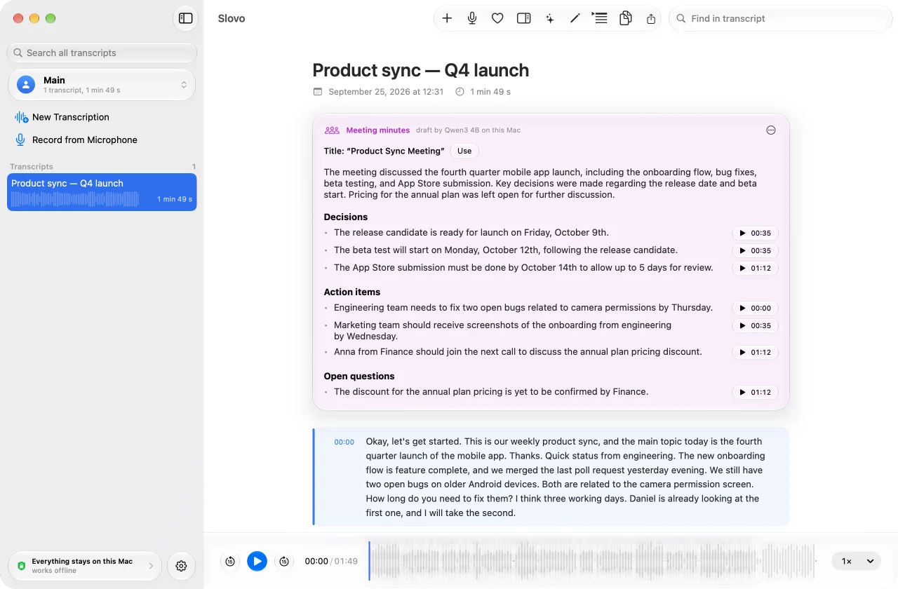
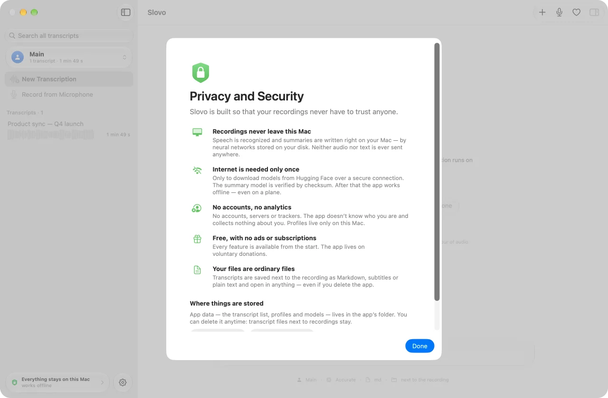

Slovo
Speech to text. Right on your Mac.
Transcribes meetings, lectures and interviews, and writes minutes and notes. Your recordings never leave your computer — neither audio nor text.

Transcription
An hour of audio in about eight minutes.
Slovo recognizes speech with the Whisper neural network right on your Mac. Drop a file into the window — the text appears with a timestamp on every paragraph, and clicking a paragraph plays that part of the recording.
No lost text
Speech models sometimes get stuck in a loop and silently drop parts of a recording. Slovo checks every result and, if needed, redoes the recording piece by piece between pauses.
Record from the microphone
Meeting, lecture or dictation — record right in the app. When you stop, the recording goes straight to transcription.
Search everything
Finds a word across all your transcripts at once.
Profiles and folders
Work, study, personal — each profile has its own model, language, format and folder.
Edit the text
Fix a name or a term — the files next to the recording update themselves.
Ordinary files
Transcripts are saved next to the recording and open in anything — even without Slovo.
Truly free
No ads, subscriptions or trials. Every feature is available from the start; development lives on voluntary donations.
Summaries
Minutes ready before your coffee is.
An on-device Qwen3 language model turns a transcript into a document. Every point has a timestamp: click it to hear where it was said. The summary is written in the language of the recording.
Meeting minutes
Decisions, who does what by when, open questions.
Lecture notes
Topics, concepts with definitions, assignments and deadlines.
Brief summary
The gist in two or three sentences, plus key points.
Privacy
Your recordings stay yours.
Slovo is built so that your recordings never have to trust anyone. The neural networks run on your computer, and once the models are downloaded the app needs no internet.
Everything runs on this Mac
Speech is recognized and summaries are written right on your computer. Neither audio nor text is ever sent anywhere.
Internet only once
Just to download the models from Hugging Face. After that — even on a plane.
No accounts, no analytics
No servers, no trackers, no sign-up. The app doesn't know who you are.
Truly free
No ads, subscriptions or trials. Every feature is available from the start; development lives on voluntary donations.

Install
Three steps to your first transcript.
Download
Open Slovo.dmg and drag Slovo to your Applications folder.
Allow it to open
On first launch macOS shows a warning — click Done. Then open System Settings → Privacy & Security and click Open Anyway at the bottom.
Pick a model
The app offers to download a speech model (about 650 MB). You only do this once.
Why the warning: Slovo isn't notarized by Apple yet — that requires a paid developer program. You allow it to open only once; after that it opens like any other app.
Questions and answers
Which Mac do I need?
A Mac with Apple Silicon (M1 or later) running macOS 26 or later. For summaries, 8 GB of memory or more is recommended.
Which languages are supported?
The interface is in English and Russian. Slovo transcribes English and Russian speech; the recording language is set in the profile settings.
How much space do the models take?
The Accurate model is about 650 MB, the Fast one about 80 MB. The summary model is 2.5 GB, and you can skip it if you don't need summaries. Models can be deleted anytime.
Is nothing really sent anywhere?
Nothing. The app goes online only to download models from Hugging Face, when you choose to. You can check by turning off the internet: once the models are downloaded, everything works the same.
Which file formats work?
Audio and video that macOS can read: m4a, mp3, wav, aiff, flac, mp4, mov, 3gp and more. macOS can't read Ogg Vorbis and WebM.
Can I use it at work?
Yes, the license allows use for any purpose, including commercial. Before recording a conversation, make sure it's allowed and the participants agree.
How do I contact the author?
Message @iamartempn on Telegram — questions, bug reports and suggestions all go there.
Why is it free?
Because that's the idea. If the app saves you time, you can support it with a donation — but it's voluntary, and nothing is locked without one.